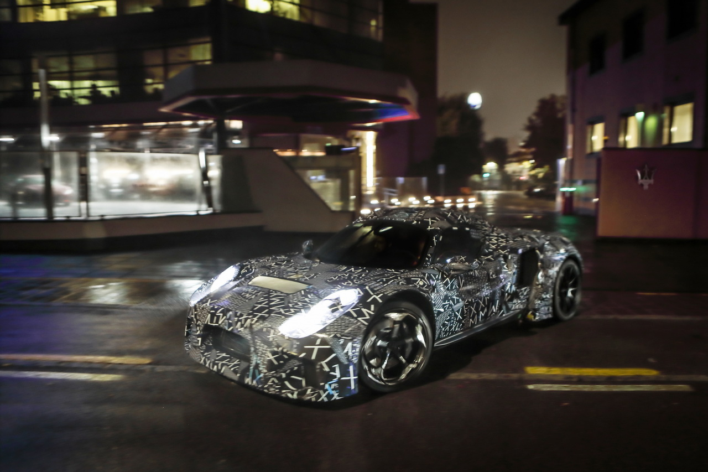
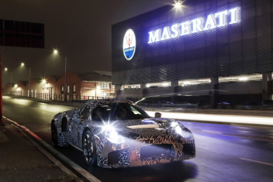

Following the "mule" tests, the first full prototype of the new Maserati MC20 super sports car has emerged from the Maserati Innovation Lab in Modena. Maserati has 100% Italian DNA and is in continuous movement: the Brand has identified and selected a series of iconic locations in Italy that effectively convey the “Masters of Italian Audacity” global statement, of which the new MC20 is the first and ultimate expression. The prototype has been photographed at night in Piazza degli Affari in Milan, below Maurizio Cattelan's sculpture L.O.V.E., a symbol of Italian audacity in international contemporary art. Now, this marks the start of a period of road and track tests, in various conditions of use, to acquire vital data for the preparation of the car's final setup. During the next few days the prototype will visit other locations symbolic of Italian audacity, before returning to Modena.  